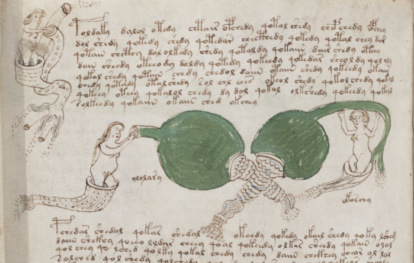
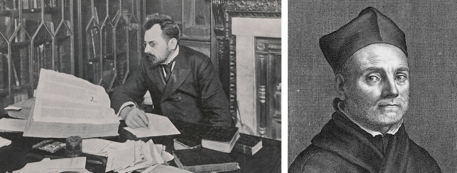
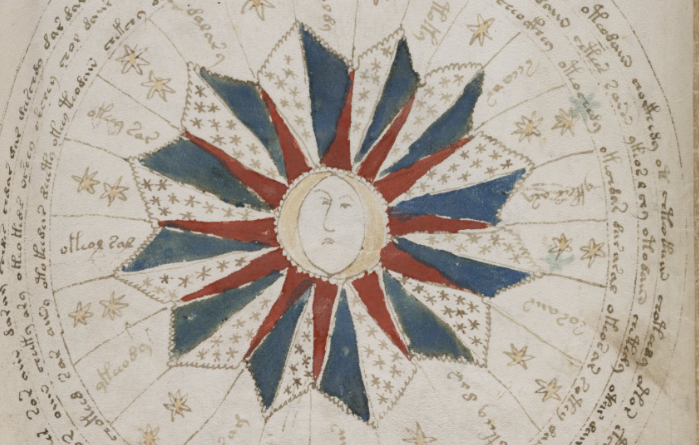
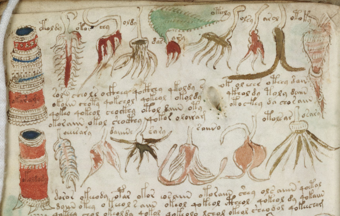

The Voynich Manuscript Says Something More Than Words
There isn’t really anything quite like it. The Voynich Manuscript is a book written in an unknown script, apparently inscribing an unknown language, filled with lavish illustrations of unidentified contraptions, scenes, and schematics that defy all attempts at understanding. The manuscript has been carbon-dated to approximately 1404-1438, is named after Wilfrid Voynich, one of its owners who helped bring it to prominence in the early 1900s, and has now rested in Yale University’s Beinecke Rare Book and Manuscript Library since 1969. I’ve been aware of this document for more than half my life now, and I return it to more frequently than may be impressive to admit; there is something about it that singularly captures my attention. I just want to know what it says1. Today, after a flash of insight, not of application, I think I do.

An example of the unknown script and similarly unknown illustrations.
Like all great discoveries nowadays, I was toying around with creative, far-fetched ideas of speculative cognition with ChatGPT. I asked it to imagine advanced, super-intelligent sauropsid beings (the taxonomic group containing reptiles and birds) that had leveraged their unique brain structure to decipher the Voynich manuscript through deep mathematical and quantum mechanical methods. The large language model gave an illuminating answer and one that I did not expect. It didn’t simply reveal what the manuscript says– that would be too easy, wouldn’t it?– and instead concluded that the journey of understanding the manuscript served, for these higher beings, as a unifying symbol of ultimate meta-conscious awareness. Circuitous, sure, yet entertaining nonetheless.
I went a few more days without thinking about it. Then the Voynich bug arose again, and I did some more digging. I tried looking at some pages in-depth myself, scanning the text, the images, the diagrams for patterns, to add to the innumerable ranks of those who have done the same, as if again trying to prove the famed Riemann hypothesis from number theory. And the mathematician Andrew Wiles, in cracking Fermat’s Last Theorem that was untouchable for centuries, proved that sometimes breakthroughs happen.
During a web search to see if there were any matches to a string of text I thought I’d recognized, I came across a site that had a brief introduction to the manuscript2. It mentioned its earliest known owner, and I dove a bit more into the manuscript’s history, where the intrigue continued to flow. Setting aside the wonder of this world of mystic scholars and alchemists that was entirely new to me, I realized there was a genuine dialogue here, something that could provide the clues that were missing.
The manuscript’s first known mention is in a letter from someone named George Baresch to Athanasius Kircher in 1639. Kircher had been known throughout Europe for his claimed deciphering of Egyptian hieroglyphs (which wasn’t correct, by the way), which would make him an obvious front-runner for elucidating another baroque writing system, at least to European eyes. Kircher’s reponse to Baresch was written in Latin, and I’ll quote a translation here by Philip Neal3:
As for the book filled with some sort of mysterious steganography which you enclosed with your letter, I have looked at it and have concluded that it requires application rather than insight in its solver. I can recall solving many writings of this kind when the occasion presented itself, and the itch of my mind working would have tried out some ideas on it if only many very urgent tasks did not call me away from unsuitable work of this kind. However, when I have more free time and can take advantage of a more suitable moment, I expect I shall try to solve it when the mood and inspiration take me.

Wilfrid Voynich (1865-1930), left, a Polish book dealer who tried searching for answers. Athanasius Kircher (1602-1680), right, a Jesuit scholar in the Holy Roman Empire who claimed to read Egyptian hieroglyphs.
Baresch had clearly reached out to Kircher out of respect and perceived expertise, and Kircher didn’t see it worth his time. This alone could be enough to dismiss the value of the manuscript– why wouldn’t a man like Kircher have wanted to solve it, unless documents like this weren’t that noteworthy back then? Filtering out signal from noise is an age-old problem, after all. He clearly mentions much other more important work he has to do, without defining what that is. What we do know, though, is that Kircher received part of this manuscript and brushed it off, almost certainly due to the reputation, or lack thereof, of the document or the sender itself.
Afer Baresch’s passing, his good friend Jan Marek Marci follows up with Kircher again. (Within this medieval circle, Kircher must have been the guy to go to, or at least the one most likely to respond.) But this time he does something different– well, I’m assuming so, because we don’t have access to the complete correspondence. Let’s look at it4:
Doctor Raphael, the Czech language tutor of King Ferdinand III as they both then were, once told me that the said book belonged to Emperor Rudolph and that he presented 600 ducats to the messenger who brought him the book. He, Raphael, thought that the author was Roger Bacon the Englishman. I suspend my judgement on the matter.
You be the judge of what we should think about it. I commend myself to your favour and grace and I remain.
He mentions that this manuscript was owned by a Holy Roman Emperor, who paid a handsome sum for it, and that it might be authored by the great (and English…) Roger Bacon. But– Marci absolutely stresses– who is qualified to say that it’s truly from Bacon, other than Kircher himself! Marci lays out motivation for Kircher to decipher the manuscript by appealing to his intellect and ego through call-outs to authority, power, and– above all, for someone like Kircher– legacy.
Maybe Marci really did think the deciphering was that important. I’d wager that he just wanted to know what the thing was.
I looked at the manuscript again. I thought about it. There’s no record of a response from Kircher, and we might never know if he gave it a college try or not. What if he did? Let’s say he had it in his hands, sat at his writing desk for a good number of sessions, and cracked the code like he claimed to do for hieroglyphs. Behold– the alignment of the cosmos, the dynamics of all maladies, the secrets of oneness with divinity– it’s all there, and Kircher’s got it, Bacon’s efforts be damned. Then a fire comes and erases whatever progress he had made, or a flood sweeps the mail away. It’s possible, I guess. We can’t entirely rule it out. I’ll stick with the assumption that Kircher never actually gave it a look worthy of his invaluable intellect. Or time.
It’s this lack of attention from Kircher that, I think, reveals what the manuscript says. Let’s say he doesn’t figure it out himself, but he reaches out to some in his closest circle. They continue to exchange letters and test out hypotheses, sometimes just having fun, other times in earnest pushing the limits of what they can conceive, in a way not entirely dissimilar to modern internet- and community-driven attempts. Maybe they hold a symposium, and really make some progress; they publish their own analysis, which Leibniz or Voltaire gets his hands on one day and scoffs at. One rebuttal leads to another, and maybe by this time today it’s all been figured out, or at least there’s more productive scholarship: imagine the Departments of Voynich Studies scattered throughout the universities worldwide, and the billionaire-funded institute or two that are established just to apply the newest algorithmic techniques on it.
Obviously, none of this happens, and we all know the rest. The manuscript languishes in obscurity, with various peaks of interest waxing and waning– cryptographers from the NSA attempt to crack it– and it’s mostly written off as some historical oddity that inspires ocasional bouts of curiosity, which certainly are memorable… but no serious person seems to have it as as their primary working focus.
Sounds a bit like where Kircher found himself, doesn’t it?
One thing that captivates me so much about the manuscript is that it’s so darn passionate. Someone (or someones) spent a lot of time on this. Even if it’s just gibberish in the end, it has to have taken the form of an obsession for the author. So let’s imagine a particular scenario, and we’ll see if you can then read the manuscript the same way I do now.

I think I’m most intrigued by the intricate diagrams and figures, which seem to indicate they hold some deep, explanatory meaning.
There’s a person in medieval Europe who’s a bit curious about the world. They’re reading interesting reports about far-off lands described and fantastic things uncovered, pondering about all the machinations of Nature and the gods, captivated by the conjunction of the elements and the eternal fire beyond us all. Maybe they try a mind-altering substance that brings them to a wholly new place– or there’s no substance as the spark, but an ineffable exploration of the mind, however encountered in waking or dreaming, or some other state– and they just have to write this down, and they really, really want to share it. So they do. They trace out all the pictures, fill in color in between the lines (well, sometimes, at least), and record it all. There– Newton’s Principia before classical physics, Kant’s Critique of Pure Reason before rationalism and empiricism have even gone to battle– is the Tome of All Knowledge.
And it’s not in Latin. No– it couldn’t be in Latin. That would just be too commonplace, wouldn’t it? This text is the answer to it all, after all! It can’t be read by us. It’s not from us. It’s written in the style just as it was, the author says, as it came to me.
We’ll likely never know what the author’s true intentions were, whether to inform or to beguile, but let’s continue this further. OK– they have this impressive book, a voluminous collection of ink on vellum, which isn’t exactly easy to come upon, by the way– and while the author is satisfied with the handwriting (it’s from the gods, remember), they realize that to match the professionalism of other maps and publications of the time, that in order to be taken seriously, they’re going to need a better artist. They go to a local publisher– excuse me, who are you?– and are immediately shunned away; the nearby monastery has no interest, and they’re at capacity anyway; nobles don’t ever bother coming to this village as it is, so I can’t try to impress them, either.
It’s really too bad: Here I have this text, this document, this work, shouts the author, but no one’s going to take it seriously without some better art. And it’s even worse, they continue, because they can’t even find an artist to help out. It’s not like there’s an Upwork platform for visual creatives in fifteenth century Europe.
Set aside the logistics, though– maybe the author did have several conversations with a publisher, did make inroads with a big-name monastery, did have chance or deep connections with a royal. There’s evidence the manuscript has been edited, in any event. And maybe this still all fell through, because of some petty insistences from the author, some temperamental outbursts about creative vision, or really, who knows? They could have already been a member of, and subsequently outcast from, whatever institution could have made this happen. The author was a jerk, let’s say, and there just wasn’t anyone who wanted to work with them.
Without this push– from someone, anyone– the manuscript goes nowhere, until as far we can tell, Baresch pulls it off his shelf and thinks about it.
And then Kircher declines to do the same.
The Voynich Manuscript is a monumental achievement in some combination of human creativity, daring, and downright bizzareness. Whatever it’s saying, it transcends human language, soars beyond computation, and enters into a space of something that’s not conveyed in words, or even images, but in feeling. The Voynich Manuscript has to be experienced, and I don’t just mean the process of trying to read it.
I mean in trying to be it.
Have you ever poured your heart into something, only to have it go nowhere? Have you ever fallen a bit too hard for someone, and then understood that the other person never really cared much about you in the first place? Have you ever put in extra hours at the office, trying to put the finishing touches on that project that wouldn’t impress just your boss, but the whole industry– only to get a call from HR a couple days later that your position was getting axed? (No fault of your own, of course.) Have you ever tried to do something– anything– only to realize that it wasn’t actually what you did that mattered… but how you did it?
I’m talking about relationships. Situations where success wasn’t driven solely by the quality of the output, but by the power of the network that propelled it. Where the dynamic surrounding the work– the context, the community, the uncontrollable and emergent external interest– actually better explained the eventual impact than the craftsmanship and intricacies of the artistry that went into it.
The Voynich Manuscript is a lesson that without multipliers, our efforts may as well be meaningless. Sure, in the case of the manuscript, it may in fact be meaningless– it might not say anything in the end5. But I think it really says something. It says that you can’t work alone, or in constant conflict, so confident in your own abilities, to the exclusion of all potential collaborators, and come out re-making knowledge. Of course, there will always be instances of solo contributors who manage to leave outsized impact, but these are the exceptions, not the rules. For the rest of us, whether stuck in medieval Europe or not, we’re going to need some help.

Your guess is as good as mine.
I get now what the Voynich Manuscript says, in a way that might not satisfy all the code-crackers and linguists out there. Its enigmatic script doesn’t say anything, and yet it says everything. Your communication needs to include connection: otherwise, with any luck, people may only someday debate not what you said, but whether you said anything at all6.
Footnotes
Watching from 6:49 onward, what I’m talking about is the way he says “I would just like to know what it’s all about; you know, why it’s there.” And at 8:24, the way he says “Oh, no; it’s not arbitrary!” will continually haunt me.↩︎
Check Quire 1 for the introduction. I also used the images from these PDFs.↩︎
Also translated by Philip Neal. Found linked from the website in (3).↩︎
A compelling argument for rule-based text generation, somewhat akin to cellular automata.↩︎
The closing lines of this article definitely resonated with me.↩︎